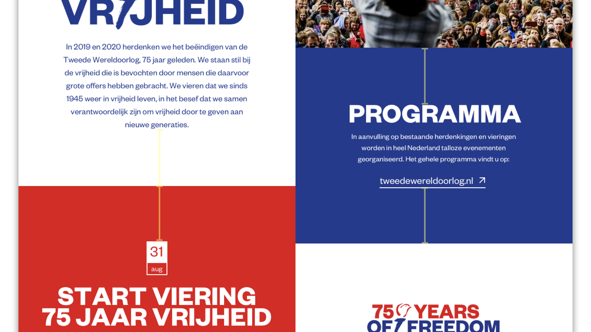

Vrijheid.nl
The Nationaal Comité 4 en 5 Mei is a Dutch government foundation in charge of the memorials and celebrations around Liberation Day. For the start of a national campaign, they needed a temporary page on an unused domain name before their yearly awareness campaign highlighting 75 years of freedom kicked off.

Adopting a visual identity
The campaign for 75 years of freedom was made by KesselsKramer. They provided me with visual guidelines from where I could start designing the temporary page, like colors and fonts. To achieve a more playful look in the website, I experimented with margins. All vertical margins are equal, achieving a tile-effect between the elements of the website and keeping it visually clear and calm.
Result
The page was online on vrijheid.nl until approximately August 2019, when the full new website went online.